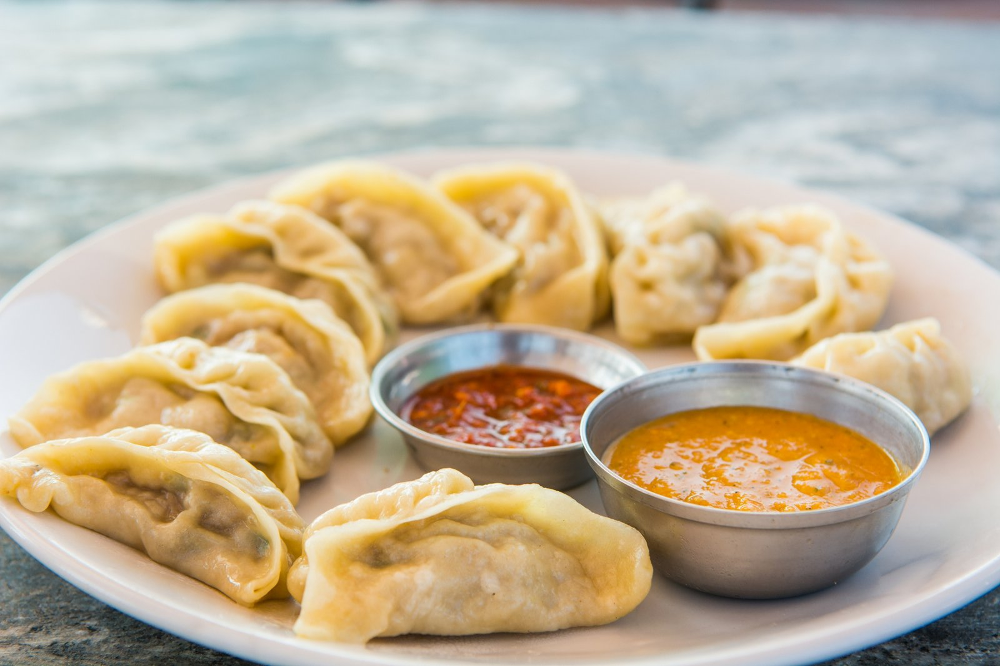

Aniruddha Pokhrel

I am the type of person who likes to spend equal amount of time having fun and completing the work I have. When it comes to food, I would call myself a foodie. I try different types of food. I really like Indian and Nepal food. I would say Momo is my favorite food of all. Momo is very similar to Chinese dumplings but it has various Nepali touches to it. I don't have a certain food that I hate but I amn't really fond of food that has bread as a part of it. It can be normal bread slices to buns. Being from a landlocked country, I had never tried sea food. When I first tried it, I found out that I was allergic to sea food. I even had to be hospitalized for 2 days because of the severe symptoms.

The last show that I binged was Peaky Blinders. I had watched the show before but I had to rewatch it because the season 6 of the show is on its way. Turns out, I forgot the ending as well as the important details.
Peaky blinders has the following storyline -
"Britain is a mixture of despair and hedonism in 1919 in the aftermath of the Great War. Returning soldiers, newly minted revolutions and criminal gangs are fighting for survival in a nation rocked by economic upheaval. One of the most powerful gangs of the time is the Peaky Blinders, run by returning war hero Thomas Shelby and his family. But Thomas has bigger ambitions than just running the streets. When a crate of guns goes missing, he recognizes an opportunity to advance in the world because crime may pay but legitimate business pays better. Trying to rid Britain of its crime is Inspector Chester Campbell, who arrives from Belfast to try to achieve that goal."